Fasi del volo - Comunicazioni T/B/T
In questa pagina viene ricostruito il volo del DC-9 Itavia così come vissuto dai due piloti e dai controllori di volo, sulla base, quindi, delle comunicazioni T/B/T e dei tabulati radar.
Per facilitare la comprensione dello svolgimento del volo anche a chi non ha conoscenze d'aviazione, sono presenti cartine (ottenute dai tabulati radar), immagini e commenti.
Oltre all'ovvio scopo di questa pagina consistente nel descrivere oggettivamente ciò che è successo all'IH870 durante il progredire del volo, un'utilità secondaria può essere quella di far chiarezza sulle molte "aggiunte", ormai presenti ovunque (libri, video, blog, forum, ecc), apportate da menti creative il cui unico scopo è rendere più avvincente ed interessante la storiella da loro raccontata.
Tra le innumerevoli fantasie che possono essere trovate in rete e perfino nei documenti processuali, si può mettere in evidenza chi, da un lato, minimizza tutto, dicendo che durante il volo, al DC-9 non è successo niente di strano, tutto funzionava perfettamente e il volo è stato assolutamente regolare. Dall'altra parte c'è chi, invece, sostiene che sia successo di tutto: radar di Roma temporaneamente fuori uso, controllori che esortano ripetutamente l'IH870 a rientrare in aerovia, transponder dell'IH870 che non funziona e che quindi sarebbe stato spento e poi riacceso, ecc.
Appuriamo oggettivamente cosa accade realmente, prendendo atto semplicemente di ciò che si dicono piloti e controllori e con l'aiuto dei tabulati radar.
Fonti d'informazione
Le trascrizioni delle comunicazioni TBT usate in questa pagina sono tratte da:
- "WP000013_001.DOC"
fonte per la parte iniziale del volo, fino al sorvolo di Firenze;
- sito NOI DELL' ITAVIA per la sola parte presente tra gli atti processuali, quindi a partire dalla riga "FREQUENZA 124.2", con l'eccezione del riporto di posizione su Firenze;
- "TITOLO 2 - L’istruttoria dal 27 luglio 90 al 31 dicembre 97." a pag. 281.
Gli orari delle comunicazioni sono tutti riportati in UTC (orario zulu) per coerenza con in tabulati radar.
Gli orari tratti dal riferimento n° 1 vengono qui corretti sottraendo 2 o 3 minuti (come indicato in ogni comunicazione) dall'orario riportato nel documento, in quanto risultano in anticipo di circa 2 o 3 minuti rispetto a quelli riportati negli altri due documenti.
È, comunque, da rilevare che questi orari sono riportati nel documento in modo alquanto approssimativo, come risulta dai 3 minuti che l'IH870 avrebbe impiegato per percorrere il tratto dal traverso di Bologna al VORTAC di Firenze, lungo circa 32/33 nm; la velocità media al suolo sarebbe pari a 640 kn! Considerando che il meteo dà un vento quasi al traverso (quindi che non contribuisce ad aumentare la velocità al suolo), anche 4 minuti sarebbero pochi, dal momento che la velocità risulterebbe 480 kn e quindi molto elevata per una quota così bassa.
Una correzione appropriata sarebbe pari a circa 5 minuti, con una velocità al suolo ben più realistica, pari a 380 kn.
I controllori di Roma normalmente visualizzavano sullo schermo radar i dati provenienti dall'estrattore 1 del radar Marconi (v. "Motivazioni - Parte 1a", seconda metà di pag. 148). Pertanto, anche in questa pagina viene utilizzato l'estrattore 1, con qualche integrazione tratta dal tabulato di Poggio Ballone.
Svolgimento del volo
Il 27 giugno 1980, il DC-9 Itavia con marche I-TIGI proveniente da Palermo atterra a Bologna alle 19:04B, con un ritardo di 1h34m sull'orario previsto, per una serie di ritardi accumulati durante la giornata (v. "TITOLO 2 - L'istruttoria dal 27 luglio 90 al 31 dicembre 97", pag. 621).
Il comandante Gatti prende in consegna l'aereo alle 19:35B circa (v.
"WP001294_001.DOC"
fonte).
In base ai METAR presenti nell'archivio di Weather Spark, nel corso del pomeriggio si sono alternati temporali a parziali schiarite. Il personale di rampa riferisce all'A.G. che intorno alle 19:45B (circa un quarto d'ora prima della partenza dell'IH870) erano presenti condizioni meteo avverse (temporale con forte pioggia, v. sempre "WP001294_001.DOC"), ma ciò non trova riscontro nei tre METAR delle 19:20B, 19:50B e 20:00B, che riportano soltanto un cielo parzialmente nuvoloso, senza alcuna precipitazione.
Alle 19:45B, l'IH803 per Ciampino (marche I-TIGA, gemello dell'I-TIGI) riceve l'autorizzazione alla messa in moto (si può ipotizzare, quindi, che questo volo sia partito circa 15 minuti prima dell'IH870). Nel frattempo, l'IH870 stava imbarcando i passeggeri.
Dopo qualche minuto, il comandante Gatti riceve l'informazione (probabilmente da Bologna Torre) che ci sono ancora 20 minuti per il suo slot (finestra temporale entro la quale il volo può essere instradato in aerovia mantenendo la separazione dall'altro traffico).
Questa circostanza viene riferita al G.I. Priore da Ciancarella Mario (ex ufficiale pilota dell'AMI) durante il processo verbale di testimone senza giuramento del 28.01.1994 (v.
"WP000087_001.DOC"
fonte prima pagina):
DALLE INFORMAZIONI IN NOSTRO POSSESSO. CIOE' IN POSSESSO MIO E DI SANDRO MARCUCCI, IL RITARDO DEL VOLO DEL DC9 DELL'ITAVIA, LA
SERA DEL DISASTRO, AVVENNE NON A CAUSA DI CONDIZIONI METEO AVVERSE MA A SEGUITO
DI UNA TELEFONATA ARRIVATA ALL'AEROPORTO DI BOLOGNA CHE DISPONEVA LA SOSTA DEL
VELIVOLO FINO A NUOVE DISPOSIZIONI. LA TELEFONATA ARRIVO' ALLA TORRE DI
CONTROLLO E PER QUANTO MI RISULTA SI TRATTAVA DI UNA TELEFONATA RICEVUTA DELLA COMPAGNIA ITAVIA.
Finalmente, alle 20:00B arriva l'autorizzazione per la messa in moto dell'IH870. La partenza era prevista per le 18:15B, ma avviene con 1h53m di ritardo, cioè alle 20:08B (momento in cui il DC-9 si stacca dalla pista), quindi con ulteriori 19 minuti di ritardo (rispetto a 1h34m accumulati fino all'arrivo a Bologna).
Il decollo avviene con un moderato vento al traverso (il METAR riporta per le 20:00B 18 kn da 200°).
Lo svolgimento del volo può essere suddiviso nelle seguenti fasi (sono tutti link che consentono l'immediato accesso ad ogni fase):
1) Salita iniziale
Dopo il decollo, Bologna Torre passa subito l'IH870 all'ente di controllo del traffico aereo di competenza, che all'epoca si chiamava MILANO 2 AEROVIE.
1812/Z 18:10
IH-870 MILANO BUONASERA ITAVIA 870
MILANO BUONASERA FORTE E CHIARO AVANTI
IH-870 SIAMO SULLA FIRENZE UNO - ALFA STIAMO LASCIANDO QUATTRO SU PER 190
MILANO RICEVUTO ITAVIA 870 PROCEDETE COME DA AUTORIZZAZIONE E APPENA POSSIBILE UNO STIMATO DI FIRENZE
IH-870 SI FIRENZE SARA' IN 12 MINUTI DALLA PRESENTE
MILANO RICEVUTO
Questo orario viene corretto di 2 minuti poiché in questa comunicazione si legge: "FIRENZE SARA' IN 12 MINUTI DALLA PRESENTE" e in quella che segue: "CONFERMATE LO STIMATO DI FIRENZE SEMPRE AI 22", quindi il controllore ha calcolato 10 + 12 = 22, per cui l'orario della presente comunicazione è 18:10.
L'IH870 comunica al controllore di stare eseguendo la partenza strumentale standard Firenze 1A e di stare attraversando 4000 ft in salita per il livello di volo 190 (circa 19000 ft).
Milano autorizza il volo come pianificato e chiede l'orario stimato di sorvolo del VORTAC di Firenze (per mantenere la separazione del traffico).
1815/Z 18:12
IH-870 MILANO ITAVIA 870
MILANO AVANTI
IH-870 STIAMO LASCIANDO 110 E SIAMO SUL PUNTO PIPPO CHIEDIAMO SE POSSIBILE UNA INVERSIONE A DESTRA INVECE
CHE A SINISTRA PER EVITARE IN QUANTO A DESTRA E' COMPLETAMENTE LIBERO
MILANO RICEVUTO 870 FATE PURE QUESTA INVERSIONE VERSO DESTRA E L'IMPORTANTE E' CHE VOI ALL'ABEAM DI BOLOGNA SIATE A 140 O DI PIU'
IH-870 STIAMO LASCIANDO GIA' 130 AL PRESENTE
MILANO D'ACCORDO RIPORTATE RIENTRANDO IN AEROVIA E CONFERMATE LO STIMATO DI FIRENZE SEMPRE AI 22
IH-870 FACCIAMO INTORNO AI 20
MILANO RICEVUTO
Questo orario viene corretto di 3 minuti per tenere conto che sono saliti di circa 7000 ft dalla precedente comunicazione; la velocità media di salita è, quindi, pari a circa 3500 ft/min, coerentemente con i 3200 ft/min tenuti inizialmente durante la salita finale dal livello 230 al 290.
L'IH870 si trova sul punto di riporto chiamato PIPPO. In base a quanto dice il pilota, la procedura di partenza prevedeva una virata a sinistra, ma ne chiedono una a destra per evitare il maltempo ("per evitare", in aviazione, è una frase di senso compiuto che sottintende una zona di maltempo pericolosa per il volo, come una nube temporalesca o una zona di turbolenza).
Il controllore autorizza la virata a destra, sottolineando la necessità di trovarsi ad un livello di volo non inferiore al 140 al traverso ("abeam") dell'NDB di Bologna. Il punto di riporto "ABEAM BOA" era situato lungo l'A-12 ed era "su richiesta" (v. "Controllo radar e procedurale").
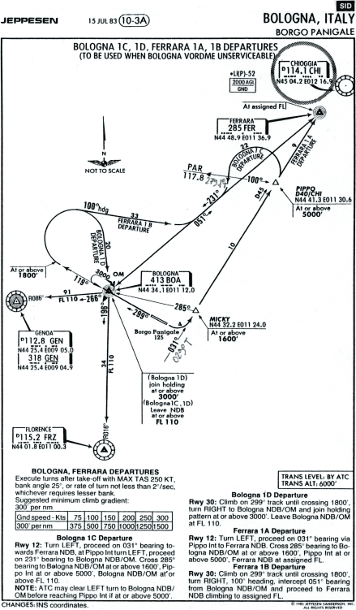
Qui vediamo la possibile procedura che avrebbe potuto eseguire l'IH870.
Nel 1983 non esiste più la
Firenze 1A, ma le comunicazioni
T/B/T fanno capire che la partenza è certamente molto simile alla
Bologna 1C della cartina. La pista di decollo, quindi, poteva essere solo la 12 (verso sud-est).
Il DC-9, allora, è decollato per pista 12, ha retratto il carrello, ha virato a sinistra verso l'NDB di Ferrara, ha sorvolato il punto MICKY, ha sorvolato PIPPO, ha virato a destra e si è reimmesso in aerovia, è tornato indietro risorvolando MICKY, procedendo verso Firenze.
2) Ingresso in A-12
1818/Z 18:15
IH-870 E' IN AEROVIA LA 870 MANTIENE 190
MILANO RICEVUTO CI RIPORTI FIRENZE
IH-870 D'ACCORDO
L'orario viene corretto di 3 minuti sempre a seguito di considerazioni sulla velocità di salita e considerando che hanno già livellato.

Il DC-9 esegue la virata a destra per immettersi nell'aerovia A-12 e riporta l'ingresso in aerovia già al livello 190.
1819/Z 18:16
IH-870 E' POSSIBILE UN LIVELLO SUPERIORE PER LA 870
MILANO EH NOI NON ABBIAMO NIENTE DI PIU' ALTO PER VOI, DOPO FIRENZE SE POSSIBILE CON ROMA CONTROLLO
IH-870 BENE GRAZIE
Applicata una correzione di 3 minuti per mantenere la stessa distanza temporale dalla comunicazione precedente.
L'IH870 potrebbe già iniziare la salita al livello finale di crociera quando ancora si trova alla partenza (si trova addirittura un po' più a nord della partenza), ma fino a Firenze non c'è niente da fare.
1820/Z 18:17
IH-870 STA LASCIANDO IL TRAVERSO DI BOLOGNA LA 870
MILANO RICEVUTO
Applicata una correzione di 3 minuti, come per il riporto su Firenze.
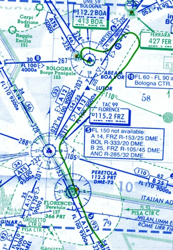
Il DC-9 sta passando il traverso dell'NDB di Bologna, dirigendosi verso il VORTAC di Firenze lungo il segmento Ferrara - Firenze.
Questa piccola parte di una cartina aeronautica mostra lo spazio aereo inferiore (cioè quello al di sotto del livello di volo 245), quello impegnato dall'IH870 nella sua prima parte del volo.
In questa cartina è già visibile il VOR/DME di Peretola (simbolo blu indicato con "112.5 PRT"), che però non era presente nel 1980. All'epoca dei fatti era presente solo l'NDB di Peretola (simbolo verde indicato con "366 PRT"). Probabilmente non esisteva nemmeno il VOR/DME di Bologna, per cui veniva usato l'NDB.
Si può notare il triangolino vuoto "ABEAM BOA VOR". Questo punto è vicinissimo al punto "ABEAM BOA NDB" (il traverso di Bologna, non presente nella cartina).
3) Ingresso in A-14
1823/Z 18:20
IH-870 FIRENZE LA 870 MANTIENE 190
MILANO HA DETTO CHE HA LASCIATO FIRENZE CONFERMA
IH-870 E' SU FIRENZE CONFERMIAMO
MILANO 870 RICEVUTO ULTERIORI CON ROMA 124.2 A RISENTIRCI
IH-870 124.2 GRAZIE BUONASERA
Si considera che il riporto di posizione sia stato effettuato alle 18:20, ritenendo valido l'orario indicato nel "TITOLO 2 - L’istruttoria dal 27 luglio 90 al 31 dicembre 97." a pag. 281.
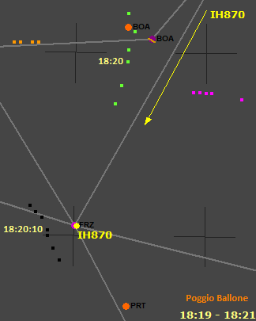
L'IH870 riporta il sorvolo della radioassistenza di Firenze (dischetto viola FRZ), costretto a mantenere ancora il livello 190.
Siccome l'aerovia non è sotto copertura radar (nel 1980), il controllore non può sapere dove si trova esattamente un aereo; l'IH870, quindi, è obbligato a riportare al controllore il sorvolo della radioassistenza, che era anche un punto di riporto obbligatorio (v. "
Controllo radar e procedurale").
Il tabulato di Poggio Ballone mostra il traffico ampiamente dettagliato nella pagina "
Presenza dell'AWACS": ci sono i due aerei, uno arancione (quasi certamente un AWACS) e uno viola, LE011 (verde) e il misterioso LG461 (nero).
LE011 si trova a 28 nm dal VORTAC di Firenze (e, quindi, dall'IH870), mentre LG461 si trova a circa 5 nm (9 km) dall'IH870, entrambi hanno il transponder spento o in standby.
Inizialmente, LG461 vola in parallelo all'IH870.
FREQUENZA 124.2
18.20.26
=IH870= BUONASERA RADAR DI ROMA, E' L'IH870
= ROMA= BUONASERA ANCHE A LEI 870, INSERISCA 1136 ED E' UTORIZZATO A PALERMO VIA BOLSENA-PUMA-LATINA-PONZA-A13
=IH870= 1136 STA ARRIVANDO PER LEI A PALERMO COME DA PIANO DI VOLO, E' SU FIRENZE, PRATICAMENTE, MANTIENE 190
Notare la mancata sincronizzazione di questa trascrizione con la precedente.
Il controllore chiede ai piloti d'inserire nel pannello del transponder il codice 1136 e autorizza l'IH870 per l'instradamento standard, coincidente con quello pianificato nel piano di volo.
Il codice assegnato serve per identificare univocamente l'IH870, distinguendolo dall'altro traffico, al quale, ovviamente, sono stati assegnati codici differenti. Ogni volta che un radar secondario (sia civile che militare) interroga il transponder, il DC-9 gli risponde con il codice 1136 (v. "RADAR e SIF → Radar di sorveglianza secondario").
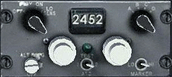
Questo è un arcaico transponder che potrebbe essere stato presente a bordo del DC-9 Itavia.
Uno dei due piloti (di solito il 1° ufficiale) ruota le quattro ghiere bianche per impostare i numeri comunicati dal controllore (1136, in questo caso).
Il pilota comunica di essere "praticamente" su Firenze (hanno appena passato la radioassistenza) e che stanno mantenendo il livello di volo 190.
18.23.38
= ROMA= 870 A CHE DISTANZA E' DA FIRENZE?
=IH870= SIAMO PROSSIMI A PERETOLA, 15 MIGLIA A SUD
= ROMA= CI RICHIAMI A 20 MIGLIA
=IH870= OK
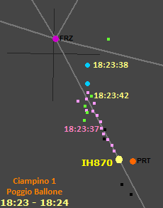
L'immagine mostra i plot dai tabulati di Poggio Ballone e di Ciampino (estrattore 1 del radar Marconi) e la posizione approssimativa dell'IH870 (15 nm da FRZ).
L'IH870 non compare ancora sugli schermi radar, nonostante sia più vicino a Roma dell'altro volo Itavia (IH779, rosa, da Bergamo a Ciampino). Il controllore deve chiedere, quindi, all'IH870 dove si trova, perché deve farlo salire al livello 290 (come da piano di volo), ma l'IH779 (al 250) interferisce con la salita; il controllore aspetta che l'IH870 si avvicini ulteriormente al radar, sperando che compaia sullo schermo entro 20 nm da FRZ.
AA464 (ciano) si trova a circa 11 nm dall'IH870, LE011 (verde) a meno di 8 nm e l'IH779 a poco meno di 4 nm.
4) Salita al livello 230
18.24.45
=IH870= 21 MIGLIA PER LA 870
= ROMA= SALGA A 230
=IH870= A 230, LASCIA 190.
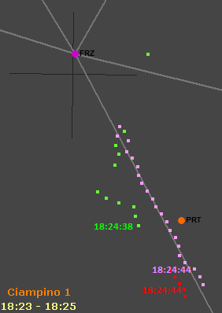
Qui vediamo solo l'estrattore 1 di Ciampino, che finalmente inizia a mostrare l'IH870 (plot rossi).
L'IH870 dista circa 1,9 nm (3,5 km) dall'IH779. I due aerei sono troppo vicini per far attraversare all'IH870 il livello occupato dal 779, per cui il controllore fa salire l'870 al massimo livello possibile: il 230, in quanto il 250 è occupato dal 779 e il 240 è riservato agli aerei che volano in direzione opposta.
AA464 (con SIF3 = 4200, qui rappresentato con il colore verde) sembra andare dapprima verso Grosseto per poi virare di 90° a sinistra e rientrare in aerovia. In realtà, il tabulato di Poggio Ballone riporta una rotta di 180/183°, per cui, quell'apparente virata è solo dovuta all'elevato errore in azimut del radar Marconi di Ciampino, fatto confermato dal tabulato del radar Selenia, in cui quella virata non risulta presente.
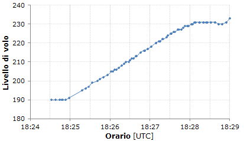
Il grafico mostra il profilo di salita dell'IH870 dal livello 190 al 230.
Si può notare come il comandante se la prenda comoda, salendo ad appena 1600 ft/min, sapendo bene che c'è l'IH779 che gli impedisce, almeno per il momento, di salire al livello finale di crociera (il 290).
5) Zig-zag verso Grosseto
18.26.06
Roma: 870 identifichi.
IH870: arriva.
Roma: ok, è sotto radar, vediamo che sta andando verso Grosseto, che prua ha?
=IH870= LA 870 E' PERFETTAMENTE ALLINEATO SULLA RADIALE DI FIRENZE, ABBIAMO 153 IN PRUA
=IH870= CI DOBBIAMO RICREDERE SULLA FUNZIONALITA' DEL VOR DI FIRENZE
= ROMA= SI', IN EFFETTI NON E' CHE VADA MOLTO BENE
=IH870= ALLORA HA RAGIONE IL COLLEGA
(Nota: il volo IH779 si era in precedenza lamentato del funzionamento delle radioassistenze di Firenze e Bolsena.)
= ROMA= SI', SI', PIENAMENTE
=IH870= CI DICA COSA DOBBIAMO FARE
= ROMA= ADESSO VEDO CHE STA RIENTRANDO, QUINDI, PRATICAMENTE, DICIAMO CHE E' ALLINEATO, MANTENGA QUESTA PRUA
=IH870= NOI NON CI SIAMO MOSSI, EH?
Questa comunicazione è integrata con quanto riportato nel "TITOLO 2 - L’istruttoria dal 27 luglio 90 al 31 dicembre 97." a pag. 281.
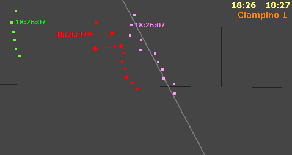
Come da prassi dell'epoca, il controllore radar che inizia a prendere in carico un volo, gli chiede d'identificarsi entro le prime battute, specialmente quando c'è traffico nelle vicinanze. Il 1° ufficiale preme il pulsante "IDENT" posto nel pannellino del transponder; così facendo, la traccia dell'IH870 viene evidenziata sullo schermo radar con un colore più brillante e con un simbolo più grande (l'immagine mostra questi quattro plot più evidenti usando il dischetto rosso, invece dei quadratini). I controllori chiedono d'identificarsi per essere sicuri che l'aereo sia proprio quello.
Lo zelante controllore, dopo aver visto tre o quattro plot un po' sparpagliati che sembrano mostrare l'IH870 che scarroccia ad ovest, gli fa subito presente la cosa, ma l'IH870 replica che sta mantenendo la radiale 153 in allontanamento da FRZ, trovandosi, quindi, proprio sull'asse dell'aerovia A-14 (v. "
Termini e sigle → Radiale di una radioassistenza").
Osservando la rotta in realtà tenuta dall'IH870, è evidente che il VOR di Firenze ha qualche problema, tanto che uno dei piloti lo fa notare al controllore, che conferma.
Il terzo plot dello "zig-zag" si trova a 4 nm dall'asse dell'aerovia, quindi ancora al suo interno, ma il controllore è quasi certamente preoccupato per la presenza della traccia verde (il caccia AA464 con SIF3 = 4200) che sta correndo per affiancarsi all'IH870 (sullo schermo radar compare la velocità e direzione delle tracce, per cui il controllore vede bene che se l'IH870 si sposta troppo ad ovest, entra in conflitto con AA464 che sta sopraggiungendo ad elevata velocità (v. "
Volo in A-14 → Descrizione degli eventi").
Il notevole errore azimutale che si nota bene per l'IH870 e decisamente meno per l'IH779 potrebbe essere dovuto ad un aereo nascosto ai radar presente a breve distanza dal DC-9 (a meno di 2 km) che modifica il punto di riflettività dell'eco radar.
Ad ogni modo, lo sparpagliamento di plot termina molto presto (in soli 30 secondi), con sollievo del controllore che vede la traccia dell'IH870 volare parallelamente all'aerovia A-14, a circa 2,4 nm dall'asse dell'aerovia (quindi ampiamente al suo interno).
Il controllore comunica al DC-9 che lo vede rientrare in aerovia e che è praticamente allineato con la radiale 153 del VOR di Firenze, ma in realtà l'IH870 ha mantenuto sempre la stessa rotta e lo riferisce a Roma con un certo stupore (non potendo sapere dello sparpagliamento di plot visto dal controllore).
18.27.11
= ROMA= 870 LO VEDE IL COLLEGA ALLE SUE ORE 11,00, UN MEZZO MIGLIO AVANTI?
=IH870= NO.....AH, SI', ADESSO LO VEDIAMO, SI', LO VEDIAMO
= ROMA= LE FA TRAFFICO, LEI DEVE SALIRE PIU' ALTO DI LUI, O LE DIAMO UNA PRUA
=IH870= SI', NOI L'ABBIAMO IN VISTA
= ROMA= E' IN GRADO DI ATTRAVERSARE?
=IH870= NOI SIAMO ABILI
= ROMA= LA 779 NON HA PROBLEMI?
=IH779= AVETE CHIAMATO LA 779?
= ROMA= SI', HA PROBLEMI? IL COLLEGA DIETRO UN MIGLIO, DUE MIGLIA DIETRO, ATTRAVERSEREBBE IL SUO LIVELLO
=IH779= PER NOI VA BENE, COMUNQUE NOI TRA POCO DOBBIAMO SCENDERE
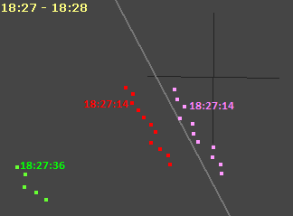
I due voli Itavia si trovano nella scomoda situazione in cui quello più in alto deve scendere per atterrare a Ciampino e quello più in basso deve salire.
Il controllore non dovrebbe far salire l'IH870 senza prima dargli un vettore per distanziarlo dall'IH779, ma siccome l'IH870 ha in vista l'altro traffico, il controllore chiede all'IH779 se gli concede questo strappo alla regola, permettendo al collega di salire, anche se ciò non è consentito, dal momento che l'IH870 ha un piano di volo
IFR e il controllore non può affibbiare al comandante la responsabilità di mantenere la separazione dall'altro traffico. L'IH779, ovviamente, non si mette a fare storie con un collega.
6) Salita al livello finale di crociera
18.28.00
= ROMA= ......... IL TRAFFICO IN OGNI CASO
=IH779= COMUNQUE SE VUOLE ATTRAVERSARE
= ROMA= LA 870 CONTINUA AD AVERE IL COLLEGA IN VISTA?
=IH779= NO, NOI NO
= ROMA= VA BENE, CI DIA LA PRUA, ORA
=IH870= 170 A DESTRA, 870 IL TRAFFICO E' SEMPRE IN VISTA
= ROMA= OK ALLORA SE E' IN GRADO DI ATTRAVERSARE MANTENENDOLO IN VISTA NON C'E' PROBLEMA
=IH870= NOI SIAMO IN GRADO
= ROMA= OK, SALGA A 290
=IH870= LASCIA 230 PER 290, 870
= ROMA= COMUNQUE ORA E' 2 MIGLIA, SEMPRE ALLE SUE ORE 11,00
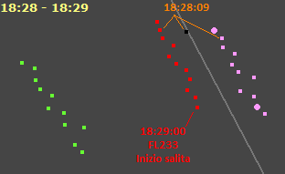
In vista della salita, l'IH870 accosta un po' a destra per separarsi dal Fokker 28 del collega.
Il controllore, dopo essersi assicurato con assoluta certezza che l'IH870 ha in vista l'IH779 ed è in grado di mantenerlo in vista, finalmente autorizza il DC-9 a salire al livello finale di crociera.
Cinquanta secondi prima, vediamo quel plot nero (di solo primario) che si trova esattamente sull'asse dell'aerovia, tra i due aerei Itavia. Potrebbe essere un falso plot o un piccolo aereo rilevato dal radar in modo molto discontinuo (proprio per la sua piccola sezione radar e/o per la bassa quota di volo).
18.29.20
=IH870= ROMA LA 870, SEMPRE COL TRAFFICO IN VISTA, RIACCOSTA NUOVAMENTE A SINISTRA, PASSA 245
= ROMA= SI', SI', VADA DIRETTO A BOLSENA
=IH870= (DA' IL RICEVUTO SCHIACCIANDO 2 VOLTE IL PULSANTE DEL MICRO)
18.31.56
=IH870= MANTIENE 290 LA 870
18.32.00
= ROMA= RICEVUTO
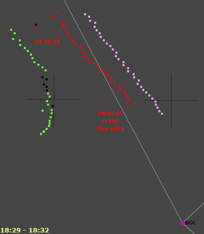
L'IH870, mentre attraversa il livello di volo occupato dal collega (il 250), riaccosta a sinistra per riavvicinarsi all'asse dell'aerovia, sempre mantenendo in vista l'IH779.
Il controllore lo autorizza diretto per il VORTAC di Bolsena (il cui VOR, a giudicare dalla rotta dei due aerei, non funziona).
Si possono notare i due plot, uno rosso e l'altro nero, molto spostati verso la traccia verde. La sequenza dei plot sembra mostrare un aereo ad elevate prestazioni che schizza via dal DC-9 non appena questo inizia a salire. L'argomento è affrontato molto dettagliatamente nella pagina "
Presenza del MiG-23 → Aereo nei pressi dell'IH870".
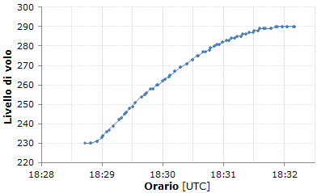
Poco prima delle 18:32, l'IH870 livella, finalmente, al 290.
Il comandante, stavolta, sale impostando la massima potenza di salita, ottenendo inizialmente 3200 ft/min.
18.32.44
= ROMA= LA 779 TENDE A SPOSTARSI SULLA SINISTRA, ORA E' 8 MIGLIA A SINISTRA,
VADA DIRETTO A CAMPAGNANO CON UNA PRUA DI 160 DALLA PRESENTE
=IH779= OK, 160 LA 779
18.33.06
= ROMA= ANCHE LA 870 PRATICAMENTE STA SEGUENDO IL COLLEGA, ANCHE LEI UN'ACCOSTATA 160
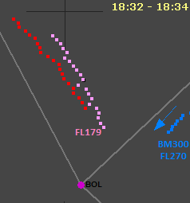
Il controllore dà un vettore ad entrambi i voli Itavia per far rientrare l'IH870 nell'UA-14 (nello spazio aereo superiore, cioè al di sopra del livello 245, le aerovie prendono il prefisso "U" di
upper) e guidare l'IH779 verso il VOR/DME di Campagnano (dal quale comincerà ad effettuare l'avvicinamento iniziale a Ciampino).
Sta convergendo su Bolsena, lungo l'UA-15, anche il volo ATI BM300 da Trieste a Fiumicino (v. "
Capitolo LXXXVII - Perizia radaristica Dalle Mese ed altri - 16.06.97." a pag. 161).
È evidente che nessuno dei tre riceve il VOR di Bolsena.
FREQUENZA 125.5
18.34.50
=IH870= BUONASERA, LA 870 A 290 E' SU BOLSENA
= ROMA= CONTATTO RADAR, COME AUTORIZZATO
=IH870= BENE
18.39.43
= ROMA= 870 134.2, BUONASERA
=IH870= GRAZIE, BUONASERA
= ROMA= PREGO.
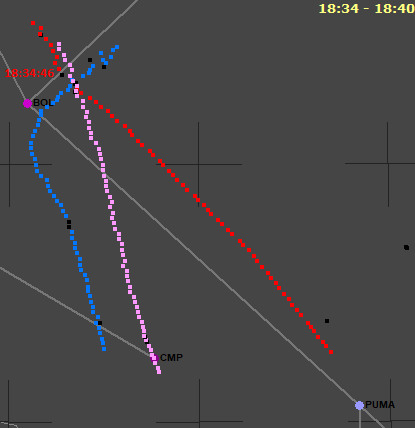
Fase estremamente tranquilla per l'IH870.
Il DC-9 riporta la posizione al controllore che conferma di avere l'aereo sul radar e che non ci sarà alcuna variazione al piano di volo.
Il riporto su Bolsena può essere unicamente effettuato grazie al TACAN (coubicato al VOR) dal quale gli aerei civili ricevono soltanto la distanza. Quando la lettura della distanza sullo strumento di bordo non varia più e poi inizia piano piano ad aumentare, i piloti capiscono di essersi avvicinati il più possibile alla radioassistenza. In effetti, l'immagine mostra il DC-9 esattamente al traverso di Bolsena, al momento del riporto.
Nel momento del riporto di posizione, il volo ATI (plot blu) si trova all'incirca a 3 km dall'IH870 (il radar è abbastanza confuso dall'incrocio dei tre aerei) e sta attraversando il livello 240 in discesa per l'avvicinamento a Fiumicino. Ciò è utile per fare ipotesi sul possibile avvistamento da parte del BM300 dell'ipotetico MiG-23 nei pressi dell'IH870.
Dopo 5 minuti, il controllore passa il traffico al settore successivo.
FREQUENZA 134.2
18.40.05
=IH870= E' L'IH870, BUONASERA, ROMA
= ROMA= EIGHT SEVEN ZERO?
=IH870= GOOD EVENING, 870 WE ARE MAINTAINING 290 AND APPROACHING PUMA
= ROMA= ROGER, PROCEED LATINA-PONZA
=IH870= LATINA-PONZA, 870
[...]
18.44.08
=IH870= ROMA LA 870
= ROMA= IH870 PER PONZA, 127.35
=IH870= 27.35, GRAZIE, BUONASERA
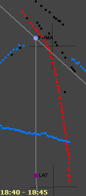
Anche questa fase non presenta niente di particolare.
L'IH870 chiama il controllore in italiano, ma lui risponde in inglese perché c'è traffico straniero in transito nel suo settore (tutti devono poter capire le comunicazioni di tutti gli altri).
Il DC-9 riferisce che si sta avvicinando al punto PUMA, mantenendo il livello 290. Il controllore lo autorizza per le radioassistenze di Latina e Ponza.
Dopo 4 minuti, l'IH870 viene passato al
TSR, ultimo settore servito dal radar.
7) Cimitero delle radioassistenze
FREQUENZA 127.35
18.44.44
=IH870= E' LA 870, BUONASERA ROMA
= ROMA= BUONASERA 870, MANTENGA 290 E RICHIAMERA' 13 ALFA
=IH870= SI', SENTA, NEANCHE PONZA FUNZIONA?
= ROMA= PREGO?
=IH870= ABBIAMO TROVATO UN CIMITERO STASERA, VENENDO DA FIRENZE IN POI, PRATICAMENTE NON NE ABBIAMO TROVATO UNA FUNZIONANTE
= ROMA= E SI', IN EFFETTI E' UN PO' TUTTO FUORI, COMPRESO PONZA, LEI QUANTO HA IN PRUA ORA?
=IH870= MANTENIAMO 195.
= ROMA= 195 SI', VA BENE, ....... 195, ANDRA' UN PO' PIU' GIU' DI PONZA, DI QUALCHE MIGLIO
=IH870= BENE, GRAZIE
= ROMA= E COMUNQUE 195 POTRA' MANTENERLO, IO PENSO, ANCORA UN 20 MIGLIA, NON DI PIU', PERCHE'
C'E' MOLTO VENTO DA OVEST, AL SUO LIVELLO DOVREBBE ESSERE DI CIRCA 100-120 NODI L'INTENSITA'
=IH870= E SI', IN EFFETTI SI', ABBIAMO FATTO QUALCHE CALCOLO, DOVREBBE ESSERE QUALCOSA DEL GENERE
= ROMA= ECCO, NON LO SO SE VUOLE CONTINUARE ANCORA CON QUESTA PRUA, ALTRIMENTI ACCOSTI A DESTRA ANCHE UN 15-20 GRADI
=IH870= OK, METTIAMO PER 210
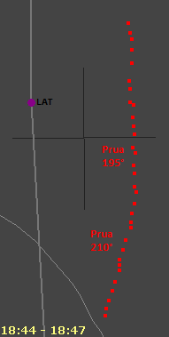
Il controllore chiede all'IH870 di richiamare quando sorvolerà il punto A-13A, situato 43 nm a sud del VORTAC di Ponza, punto in cui terminerà il servizio radar.
Mentre i piloti stanno cercando di sintonizzare il VOR di Ponza, si rendono conto che nemmeno quello funziona e il controllore conferma. Il cimitero delle radioassistenze è comunque stranamente limitato a quelle che interessano l'IH870 (v. "
Stato delle radioassistenze").
Consapevole dell'indisponibilità di una guida, il controllore chiede la prua attuale per far rientrare il DC-9 in aerovia (sta volando a circa 7 nm dall'asse).
Si nota che l'aereo ha una rotta quasi esattamente verso sud (180°), nonostante i 15° di prua a destra, ciò è chiaramente dovuto alla presenza di un fortissimo vento da destra (da ovest). Il modello matematico (v. "
Meteo lungo la rotta") dà, per questa fase del volo, un vento da 260° a circa 110 kn. Per rientrare in aerovia, il comandante ruota la manopola dell'autopilota per impostare una prua di 210°, 15° a destra rispetto alla prua precedente.
8) Discesa al livello 250
18.46.31
=IH870= E' LA 870, E' POSSIBILE AVERE UN 250 DI LIVELLO?
= ROMA= SI', AFFERMATIVO, PUO' SCENDERE ANCHE ADESSO
=IH870= GRAZIE, LASCIAMO 290
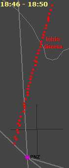
Il comandante vuole scendere di 4000 ft. La richiesta viene fatta quando l'aereo si trova ad oltre 190 nm dalla destinazione.
Un pilota deve avere una ragione eccezionalmente valida per richiedere di continuare la crociera ad un livello più basso, specialmente se la richiesta avviene ad una distanza doppia del normale.
Questa ragione è quasi certamente da ricercarsi nel fatto piuttosto usuale che un vento così forte sia associato a moderate variazioni di velocità e/o direzione del vento che spostano irregolarmente l'aereo principalmente sul piano orizzontale e, in minima parte, anche su quello verticale, infastidendo i passeggeri (l'accelerometro della "scatola nera" non rileva questo tipo di accelerazione, perché rileva soltanto quella sull'asse verticale). Oltre a questo fenomeno, poteva anche essere presente una leggera
CAT. Si veda ancora la pagina "
Meteo lungo la rotta", dopo i grafici, per ulteriori considerazioni.
L'IH870 inizia a scendere alle 18:47.
9) Ingresso in A-13
18.50.45
= ROMA= L'IH870, DICIAMO, HA LASCIATO PONZA 3 MIGLIA SULLA DESTRA, QUINDI, QUASI, QUASI, VA BENE PER PALERMO COSI'
=IH870= MOLTO GENTILE, GRAZIE, SIAMO PROSSIMI A 250
= ROMA= PERFETTO, E IN OGNI CASO CI AVVERTA APPENA RICEVE PALERMO
=IH870= SI', PAPA ALFA LIMA LO ABBIAMO GIA' INSERITO, VA BENE, E ABBIAMO IL DME DI PONZA
= ROMA= PERFETTO, ALLORA, NORMALE NAVIGAZIONE PER PALERMO, MANTENGA 250, RICHIAMERA' SULL'ALFA
=IH870= BENISSIMO, GRAZIE
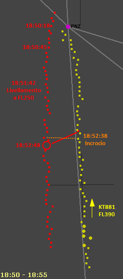
Nel continuare il suo slalom tra le radioassistenze (che non funzionano), il DC-9 passa al traverso di Ponza. Dopo una trentina di secondi, il controllore ne informa i piloti (il breve ritardo è dovuto al fatto che il controllore stava parlando col volo KT881 della British Airtours, appena preso in carico).
Il controllore vuole essere avvisato non appena l'IH870 inizi a riceve il VOR/DME di Palermo, perché sarà la radioassistenza da usare per la guida verso la destinazione, una volta terminato il servizio radar.
Ricevono sia il VOR di Palermo (per la guida in azimut) che il DME di Ponza (per la distanza dal punto ALFA); il VOR di Ponza è chiaramente non funzionante (lo si vede molto bene).
Alle 18:51:40, l'IH870 livella al 250. Avendo impiegato circa 4m40s per la discesa, la velocità verticale è stata molto bassa, circa 860 ft/min.
Alle 18:52:38, l'IH870 incrocia il KT881, volo British Airtours da Malta a London Gatwick (v. "
Capitolo LXXXVII - Perizia radaristica Dalle Mese ed altri - 16.06.97." a pag. 173), ad una distanza orizzontale di circa 9 km e verticale di circa 14000 ft, passano, quindi, ad una decina di chilometri l'uno dall'altro.
Dieci secondi dopo, si nota la stranissima collocazione di un plot con transponder 1136 (IH870) lungo la rotta del KT881. Il collegio peritale Dalle Mese riporta questo fatto in perizia, ma non gli dà alcun significato particolare.
10) Riporto dell'ALFA
18.56.00
=IH870= E' SULL'ALFA LA 870
= ROMA= E SI', AFFERMATIVO, LEGGERMENTE SPOSTATO SULLA DESTRA, DICIAMO 4 MIGLIA,
E COMUNQUE IL RADAR TERMINA, 28.8 PER ULTERIORI
=IH870= GRAZIE DI TUTTO, BUONASERA
= ROMA= BUONASERA A LEI
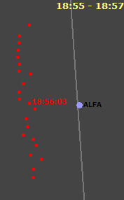
Gli estrattori 1 e 3 del radar Marconi riportano i plot abbastanza fluttuanti (siamo anche al limite della portata utile del radar), per cui il controllore stima circa 4 nm a ovest. I due estrattori del radar Selenia mostrano una traiettoria molto meno fluttuante e riporta il DC-9 a circa 5,8 nm dall'ALFA.
I piloti sono in grado di sapere che si trovano dalle parti del punto ALFA grazie al TACAN di Ponza (dal quale ricevono solo la distanza), ma non conoscono la loro posizione esatta, in quanto il VOR di Ponza non funziona. Il VOR/DME di Palermo (PAL) si trova ancora a 130 nm ed è, quindi, troppo distante per fornire una guida stabile e precisa (un errore angolare di appena 1° a 130 nm equivale ad un errore di oltre 4 km dall'asse dell'aerovia).
Il servizio radar termina; il controllore, pertanto passa l'IH870 all'ultimo settore sud di Roma, dal quale inizia il controllo procedurale (v. "
Controllo radar e procedurale").
11) Inizio controllo procedurale
FREQUENZA 128.8
18.56.54
=IH870= ROMA BUONASERA, E' L'IH870
= ROMA= BUONASERA IH870, AVANTI
18.57.00
=IH870= 115 MIGLIA PER PAPA ALFA.... PER PAPA ROMEO SIERRA, SCUSATE, MANTIENE 250
= ROMA= RICEVUTO IH870, E PUO' DARCI UNO STIMATO DI RAISI?
=IH870= SI', RAISI LO STIMIAMO INTORNO AGLI UNO TRE
= ROMA= 870 RICEVUTO, AUTORIZZATI A RAISI VOR, NESSUN RITARDO E' PREVISTO, CI RICHIAMI PER LA DISCESA
=IH870= A RAISI, NESSUN RITARDO, CHIAMEREMO PER LA DISCESA, 870
= ROMA= E' CORRETTO
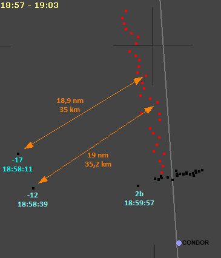
Da questo momento, il radar non viene più usato per la separazione dell'IH870 dall'altro traffico (anche se i controllori vedono comunque il DC-9 sullo schermo). È, pertanto, indispensabile ricevere una delle due radioassistenze di Palermo (PRS, situata all'interno dell'aeroporto di Punta Raisi o PAL, a circa 17 km dall'aeroporto).
L'IH870 sta usando il VOR/DME PRS, dal quale dista ancora abbastanza, sta mantenendo il livello 250 e stima di sorvolare PRS tra circa 16 minuti.
Il controllore informa l'IH870 che non c'è traffico né altre cause di possibili ritardi e attende la chiamata per autorizzare la discesa.
Dopo circa 1 minuto, sullo schermo radar compare un plot di solo primario (che verrà chiamato -17 nelle perizie, perché compare 17 giri d'antenna prima dell'ultima risposta del transponder del DC-9).
Dopo altri 28 secondi compare un altro plot, sempre di solo primario (il -12). Alcune considerazioni riguardanti questi due plot insieme al plot 2b possono essere lette nella pagina "
Abbattimento tramite missili inerti → I famosi plot a ovest".
Improvvisamente, dopo le 18:59:45, quando il DC-9 si trova a circa 16 km dal punto CONDOR, il transponder dell'IH870 non risponde più ai radar secondari e iniziano a comparire vari plot di solo primario che si dispongono nel letto del vento.
Purtroppo, la chiamata per la discesa attesa dal controllore non arriverà mai.
12) L'IH870 non risponde più
19.04.28
= ROMA= IH870 QUANDO PRONTI AUTORIZZATI A 110, UNO UNO ZERO, RICHIAMATE LASCIANDO 250 E ATTRAVERSANDO 150
= ROMA= IH870 ROMA
19.05.05 = ROMA= IH870 ROMA
[...]
19.07.26 = ROMA= IH870 RISPONDI !!!!!!
19.07.49
= ROMA= KM758 ROMA, PLEASE TRY TO CALL FOR US, TRY TO CALL FOR US IH870, TRY TO CALL IH870, PLEASE
[...]
19.10.05
= ROMA= KM153 ROMA
=KM153= GO AHEAD, KM153
= ROMA= OK, PLEASE TRY TO CALL FOR US IH870, TRY TO CALL FOR US IH870.
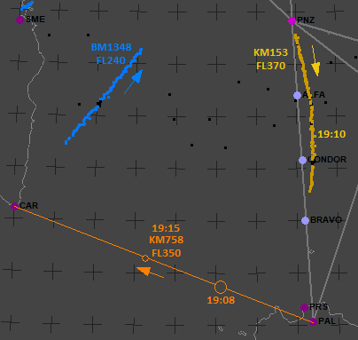
Non ricevendo la richiesta di discesa da parte dell'IH870, il controllore gliela impone, ma l'atteso
read back non avviene.
In questi casi, lo stato di tensione nervosa di un controllore è al limite dello shock, per cui chiama ossessivamente l'IH870, arrivando ad urlare.
Dopo i tentativi andati a vuoto, chiede a due aerei di fare da ponte.
Il primo è l'AirMalta Charter KM758 che dovrebbe trovarsi all'incirca a 50/60 nm da Palermo, mentre l'altro è il famigerato KM153 che sta passando proprio nelle vicinanze del luogo del disastro, prendendo, come si può notare, le debite distanze.
Sappiamo, purtroppo, che entrambi i tentativi andranno a vuoto.
In conclusione, ponendosi nell'ottica dei due piloti del DC-9 e dei controllori del traffico aereo (civile), possiamo oggettivamente constatare che tre sono i fatti degni di nota:
- lo zig-zag verso Grosseto;
- il cimitero delle radioassistenze;
- la scioccante perdita del contatto radio.
Intorno all'IH870 sono successi altri fatti di estrema rilevanza (dettagliatamente riportati nelle varie pagine del sito), ma per ciò che riguarda il volo di per sé, tutte le altre circostanze inusuali, diverse dalle tre suddette, narrate dai "creativi di Ustica" sono senza alcun dubbio prive di fondamento, in quanto non sono presenti tra le comunicazioni T/B/T e nemmeno nei tabulati radar.